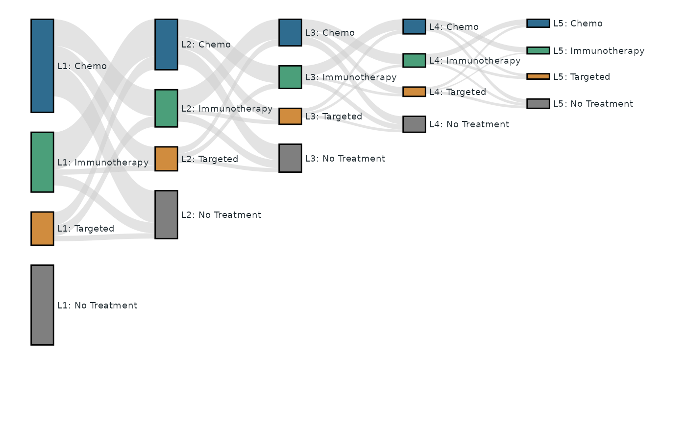

Plot Sankey Diagram with Rectangular Nodes and Bezier Polygon Links
Source:R/sankey.R
tfl_plot_sankey.RdDraw a Sankey-style plot using ggplot2 primitives (geom_rect for nodes and
geom_polygon for links).
Usage
tfl_plot_sankey(
nodes,
links,
node_id = "id",
node_stage = "stage",
node_label = NULL,
node_value = NULL,
link_source = "source",
link_target = "target",
link_value = "value",
orientation = c("horizontal", "vertical"),
baseline = c("top", "bottom"),
scale_mode = c("auto", "shared", "adaptive"),
shared_scale_max = NULL,
adaptive_max_multiplier = 3,
node_width = 0.18,
node_gap = NULL,
node_min_size = 0.015,
link_curvature = 0.45,
bezier_n = 60,
node_fill = "#4F6D7A",
node_treatment = NULL,
node_line = NULL,
treatment_color_mode = c("across_lines", "by_line"),
treatment_palette = NULL,
node_color = "black",
node_alpha = 1,
link_fill = "#CCCCCC",
link_color = NA,
link_alpha = 0.6,
show_labels = TRUE,
label_size = 3,
label_color = "#1F2A30",
label_nudge = 0.03,
label_gap_scale = 0.03,
label_position = c("right", "left"),
use_link_color_by_source = FALSE,
use_link_color_by_target = FALSE
)Arguments
- nodes
A data frame of nodes.
- links
A data frame of links.
- node_id
Column name in
nodesfor unique node IDs.- node_stage
Column name in
nodesfor stage/layer.- node_label
Optional column name in
nodesfor labels.- node_value
Optional column name in
nodesfor node values. IfNULL, values are derived from links.- link_source
Column name in
linksfor source node IDs.- link_target
Column name in
linksfor target node IDs.- link_value
Column name in
linksfor link values.- orientation
Plot direction:
"horizontal"or"vertical".- baseline
Node stacking baseline:
"top"or"bottom". Link ribbons follow it: with"top"they stack from the node top downward (the ribbon toward the top-most counterpart node attaches at the top), with"bottom"from the node bottom upward.- scale_mode
Scale behaviour:
"auto","shared", or"adaptive".Shared maximum span used in
"shared"mode and as reference in"adaptive"mode.- adaptive_max_multiplier
Maximum magnification in
"adaptive"mode. Effective minimum span isshared_scale_max / adaptive_max_multiplier.- node_width
Width of each node along stage axis.
- node_gap
Gap between nodes in the same stage, in value units. Default
NULLresolves it automatically aslabel_gap_scale * label_size * scale basis(the value span the panel is scaled against), so the centre-anchored node labels keep at least one label-sized gap apart no matter how small the nodes are – plots sharing a scale (scale_mode = "shared") all get the identical gap. Pass a number for a fixed gap (the old default was0.03). Withshow_labels = FALSEthe automatic gap is a hairline (0.002 *basis).- node_min_size
Minimum visible node size (keeps isolated zero-value nodes visible).
- link_curvature
Bezier curvature factor in
[0, 1].- bezier_n
Number of points used to sample Bezier curves.
- node_fill
Node fill color, or a column name in
nodescontaining colors.- node_treatment
Optional column name in
nodesfor treatment class (e.g., Chemo, IO, Targeted, No Treatment). If supplied, node colors can be assigned by treatment withtreatment_color_mode.- node_line
Optional column name in
nodesfor line identifier used whentreatment_color_mode = "by_line". IfNULL,node_stageis used.- treatment_color_mode
Treatment color mapping mode:
"across_lines"keeps same treatment color across lines,"by_line"reassigns colors per line.- treatment_palette
Optional color palette (character vector). Named vectors are matched by treatment names.
- node_color
Node border color (default black). Use any color, or
NAfor no border.- node_alpha
Node alpha.
- link_fill
Link fill color, or a column name in
linkscontaining colors. The default is a single light grey; useuse_link_color_by_source/use_link_color_by_targetto color ribbons by their end nodes instead.- link_color
Link border color.
- link_alpha
Link alpha.
- show_labels
Whether to draw labels.
- label_size
Label size.
- label_color
Label color.
- label_nudge
Label offset from node edge.
- label_gap_scale
Proportionality constant for the automatic
node_gap(see there); the auto gap islabel_gap_scale * label_size * scale basis. Ignored whennode_gapis given as a number.- label_position
Side of the node the labels are drawn on, along the stage axis:
"right"(default) or"left". Fororientation = "vertical"this maps to above ("right") / below ("left") the nodes. When labels are shown, the panel is extended on the label side of the terminal stage by the span a link occupies between two adjacent stages (1 - node_width) pluslabel_nudge, so terminal-stage labels get the same room as the ones drawn between stages instead of being clipped at the device edge.- use_link_color_by_source
If
TRUE, link fill uses source node color.- use_link_color_by_target
If
TRUE, link fill uses target node color.
Details
A key feature of this implementation is that nodes are laid out from the node
table rather than inferred from the links, so a node with no links at all
is still drawn, sized by its node_value. For example, a "L1: No Treatment"
group that no patients enter or leave still appears in the diagram as a
standalone node (see the example).
Examples
# A five-line oncology treatment-sequence cohort (L1 -> L5), 200 patients.
#
# The node counts behave like a real cohort: at every line about 30% of the
# patients are "No Treatment", and the total N of a line never exceeds the
# treated (non-"No Treatment") N of the previous line -- L1 treats
# 70 + 45 + 25 = 140 patients and L2 holds 120 in total; the other 20 ended
# follow-up at L1 without even becoming "L2: No Treatment".
#
# Highlighted feature: nodes are laid out from the node table, so a node
# with NO links at all is still drawn, sized by `node_value`. Here
# "L1: No Treatment" is such an isolated node -- no patients flow into or
# out of it -- yet it appears in the diagram.
trt <- c("Chemo", "Immunotherapy", "Targeted", "No Treatment")
key <- c("Chemo", "IO", "Target", "NoTx")
nodes <- data.frame(
id = paste0("L", rep(1:5, each = 4), "_", rep(key, 5)),
stage = paste0("Line", rep(1:5, each = 4)),
line = paste0("Line", rep(1:5, each = 4)),
treatment = rep(trt, 5),
label = paste0("L", rep(1:5, each = 4), ": ", rep(trt, 5)),
node_n = c(
70, 45, 25, 60, # L1: 140 treated + 60 untreated (30% of 200)
38, 28, 18, 36, # L2: 120 of the 140 L1-treated reach L2 (30% untreated)
20, 17, 12, 21, # L3: 70 of the 84 L2-treated reach L3 (30% untreated)
11, 10, 7, 12, # L4: 40 of the 49 L3-treated reach L4 (30% untreated)
6, 5, 4, 7 # L5: 22 of the 28 L4-treated reach L5 (32% untreated)
),
stringsAsFactors = FALSE
)
# Flows between consecutive lines: a new line implies a CHANGE of therapy,
# so there are no same-treatment links, and every treated node also feeds
# the next line's "No Treatment" node (patients who progressed but took no
# further therapy). One value per source-target pair with the source
# cycling fastest. Column sums equal the target node sizes and row sums
# never exceed the source node sizes.
active <- c("Chemo", "IO", "Target")
flows <- list(
c(28, 10, 20, 8, 14, 4, 24, 8, 4), # L1 -> L2
c(15, 5, 13, 4, 9, 3, 12, 6, 3), # L2 -> L3
c(8, 3, 8, 2, 5, 2, 6, 4, 2), # L3 -> L4
c(4, 2, 4, 1, 2, 2, 3, 2, 2) # L4 -> L5
)
links <- do.call(rbind, lapply(1:4, function(k) {
g <- expand.grid(s = active, t = c(active, "NoTx"), stringsAsFactors = FALSE)
g <- g[g$s != g$t, , drop = FALSE]
data.frame(
source = paste0("L", k, "_", g$s),
target = paste0("L", k + 1, "_", g$t),
value = flows[[k]],
stringsAsFactors = FALSE
)
}))
treatment_palette <- c(
"Chemo" = "#2F6C8F",
"Immunotherapy" = "#4B9F7A",
"Targeted" = "#D08C3E",
"No Treatment" = "#7F7F7F"
)
# Links use the default single light grey; set
# `use_link_color_by_source = TRUE` to color the ribbons by their source
# node instead.
tfl_plot_sankey(
nodes = nodes,
links = links,
node_id = "id",
node_stage = "stage",
node_label = "label",
node_value = "node_n",
link_source = "source",
link_target = "target",
link_value = "value",
node_treatment = "treatment",
node_line = "line",
treatment_color_mode = "across_lines",
treatment_palette = treatment_palette,
baseline = "top",
link_alpha = 0.55,
label_size = 2.5
)
